Struggling with post-traumatic stress from the Battle of New York, Tony builds an army of armors to protect Pepper from Aldrich Killian's Extremis soldiers. Stripped of everything, Tony must rely on his ingenuity and resourcefulness to defeat the Mandarin threat, ultimately triggering the "Clean Slate Protocol" to destroy all his suits.
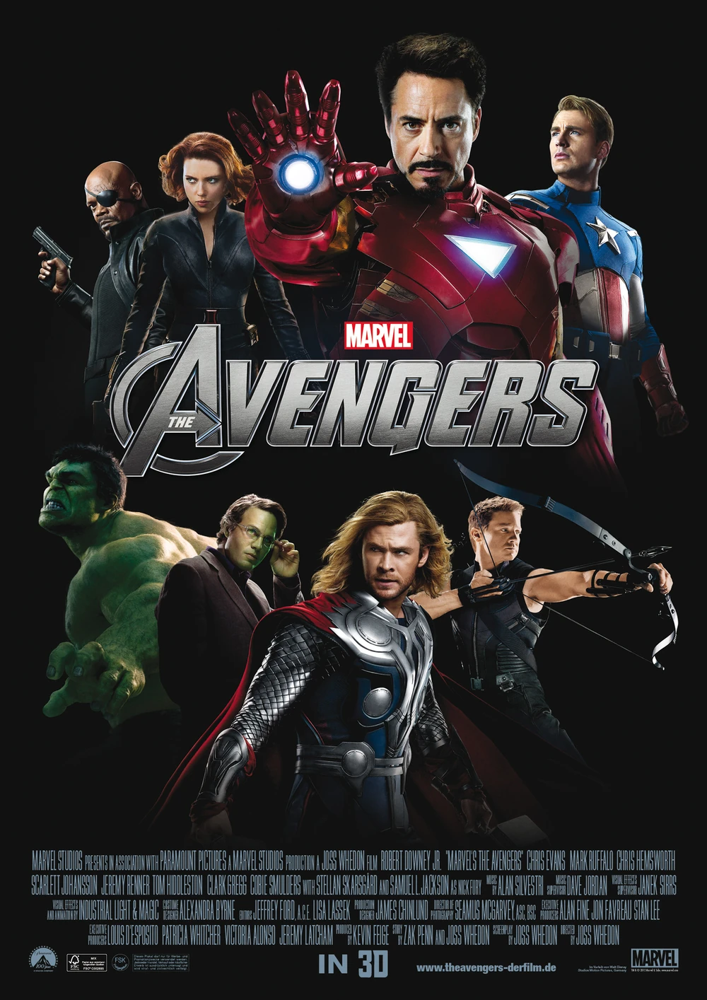
1999 Millennium Eve Party
A flashback to Bern, Switzerland, where a young Tony Stark celebrates Millennium Eve, meeting various scientists and dismissing Aldrich Killian.

Meeting Yinsen in Bern
During the 1999 party, Tony Stark is briefly introduced to Dr. Ho Yinsen by Dr. Wu—a chance meeting years before they reunite in the Afghan cave.
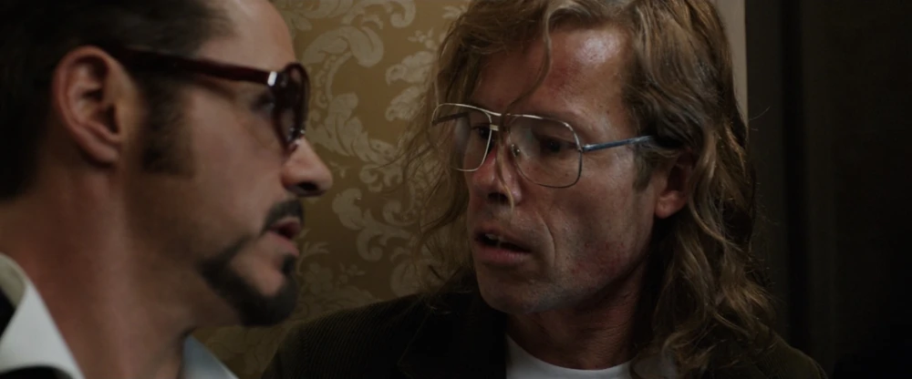
Aldrich Killian's Approach
A young, disabled Aldrich Killian tries to pitch his think tank A.I.M. to Tony Stark, who tells him to wait on the roof, leaving him stranded in the cold.
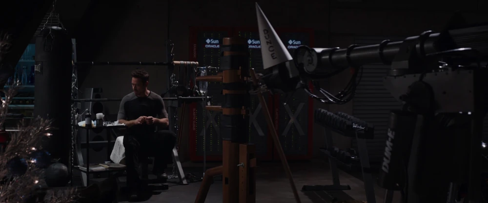
Subcutaneous Neural Implants
In his Malibu workshop, Tony injects subcutaneous micro-transmitters into his left arm to enable mental telemetry control over his new suit.

Testing Mark XLII Telemetry
Tony Stark performs a physical test in his workshop to verify the autonomous neural telemetry flight pathways of the individual Mark XLII components.
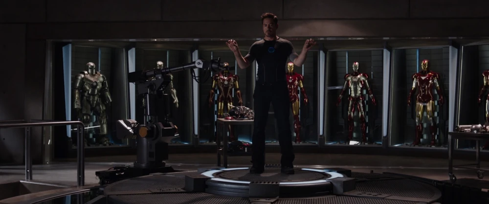
Glove Component Flight
During the testing sequence, the glove component of the Mark XLII flies across the room, perfectly locking onto Tony's forearm.

Autonomous Assembly Completion
Tony executes a spectacular backflip, guiding the final chest and faceplate segments of the Mark XLII to lock onto him, concluding the test.
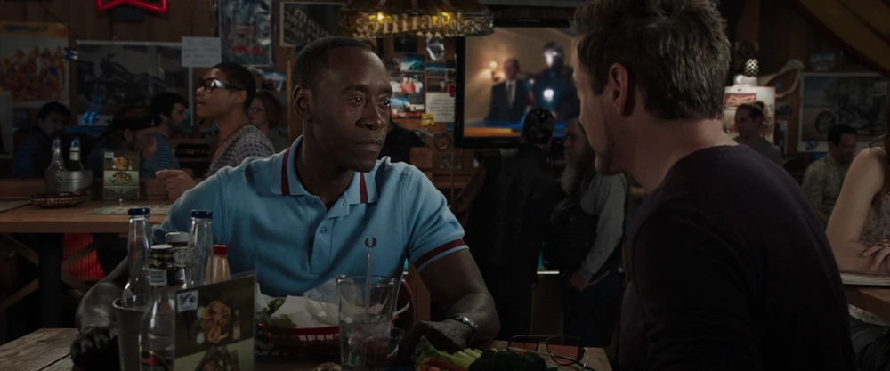
Bar Discussion with Rhodey
Tony meets with Rhodey at a local bar, discussing the new Mandarin terrorist threat and the rebranding of War Machine as "Iron Patriot."
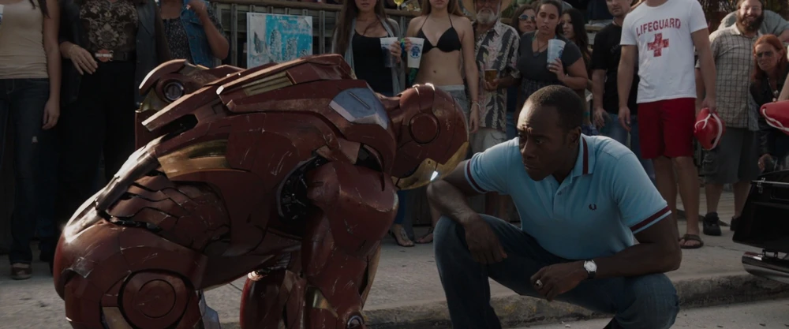
Panic Attack
When asked about the portal incident by kids in the bar, Tony suffers a sudden, severe panic attack, rushing outside to his armor for stability.
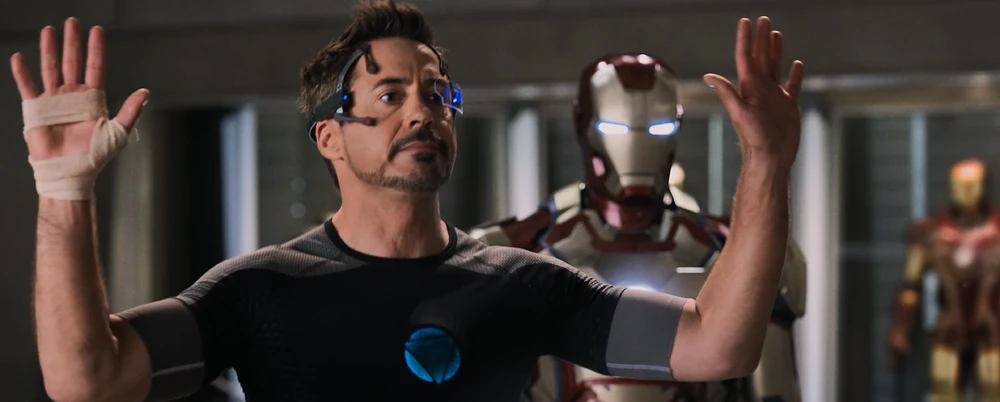
"A Piping Hot Mess"
Tony opens up to Pepper in their bedroom, admitting that the trauma of New York has left him a "piping hot mess" obsessed with building suits.
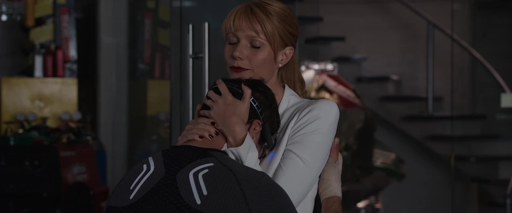
Pepper's Support
Pepper Potts comforts Tony in his Malibu workshop, seeing the emotional toll his insomnia and anxiety have taken on his well-being.
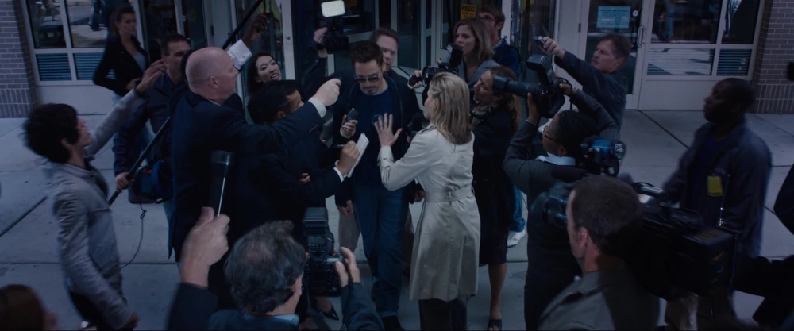
Mandarin Public Challenge
Furious after Happy is injured in an explosion, Tony leaves the hospital and publicly challenges the Mandarin, giving out his home address to the media.
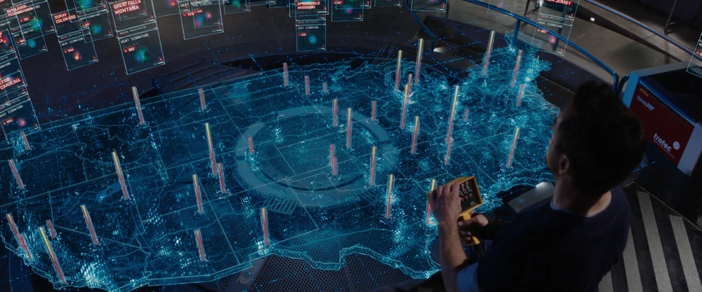
Helicopter Mansion Ambush
Helicopters armed with missiles launch an ambush on Tony's Malibu mansion. Tony uses his neural transmitters to command his suit onto Pepper to save her.
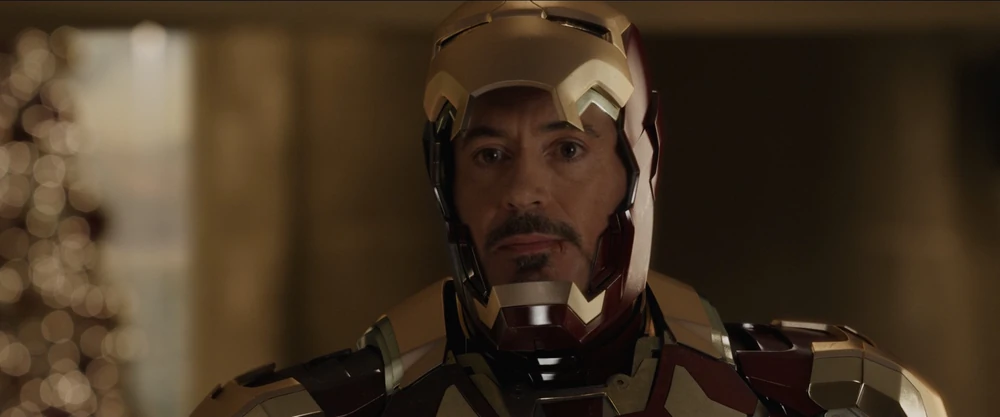
Protecting Pepper
The Mark XLII armor shields Pepper Potts from collapsing concrete and steel debris during the catastrophic destruction of the mansion.
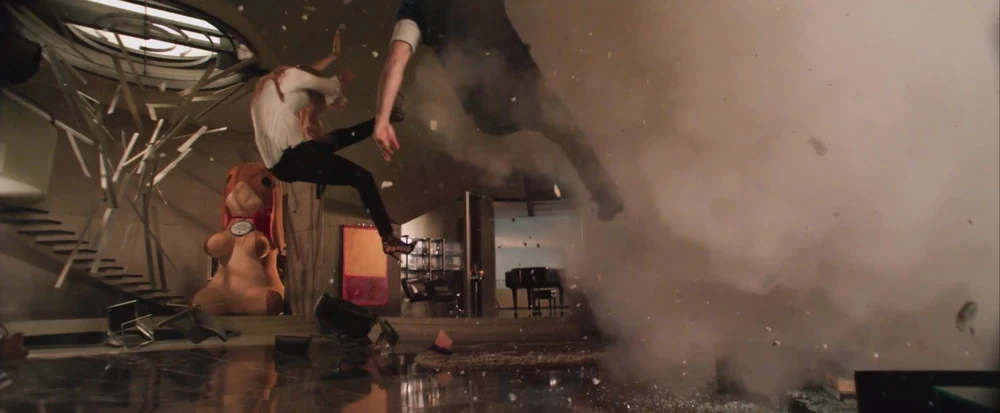
Malibu Mansion Collapses
Tony Stark's cliffside mansion collapses completely into the ocean under the heavy bombardments of A.I.M. forces.
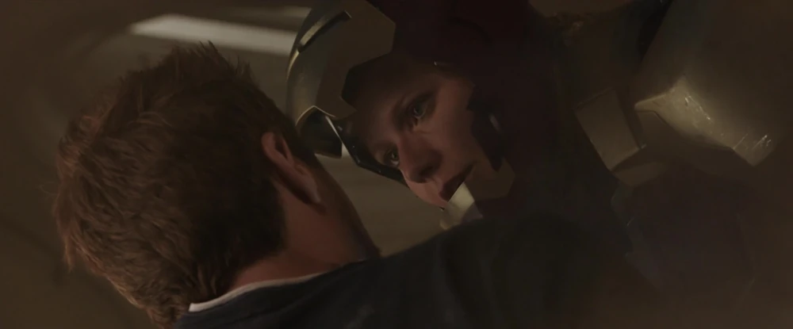
Pepper in the Suit
Pepper Potts uses the Mark XLII armor to shield Tony, then safely escapes the crumbling house before the armor transfers back to Tony.
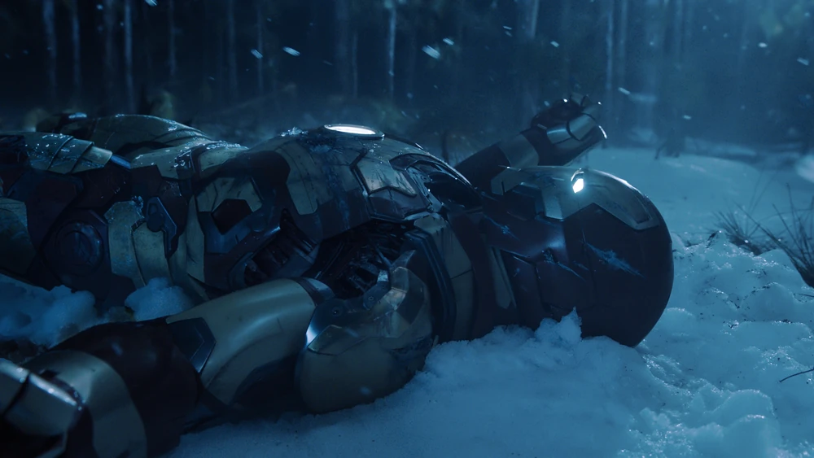
Crashed in Rose Hill
After escaping the explosion, Tony crashes in Rose Hill, Tennessee. With the suit completely drained of power, he is forced to drag it through the snow.
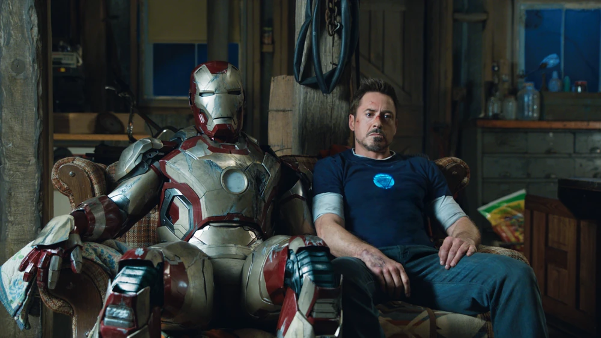
Harley Keener's Garage
Tony sets up a makeshift lab in Harley Keener's garage, analyzing the Extremis bomb signatures while recharging the damaged suit.
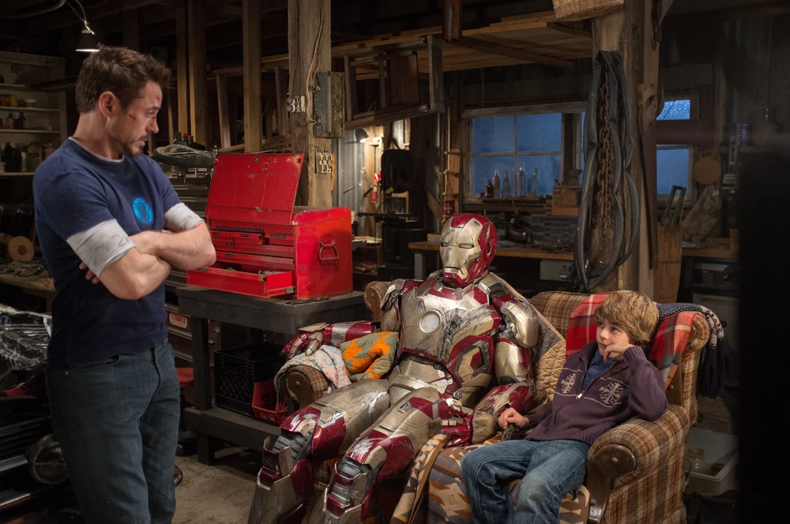
Tony & Harley Keener
Tony talks to Harley Keener, who encourages him to focus on his strengths as a builder rather than relying solely on the armor.
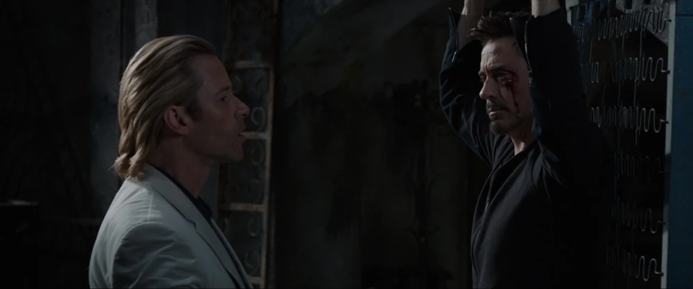
Captured by Killian
Tony is captured by A.I.M. and mocked by a heated, Extremis-infused Aldrich Killian, who reveals his plan to control the war on terror.
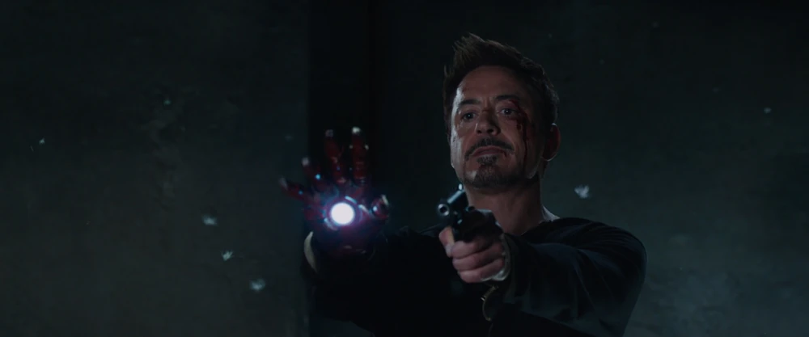
Infiltration Escape
Tony Stark escapes captivity using household items and homemade tools, waving mockingly at a guard after neutralizing the defenses.
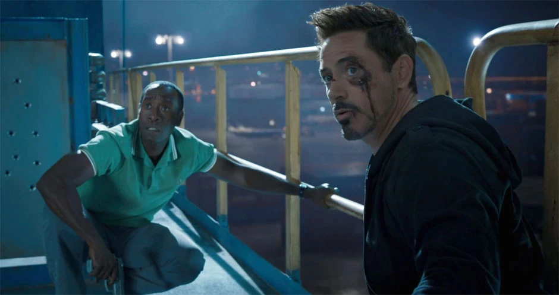
Docks Confrontation
Tony Stark and James Rhodes arrive at the docks, armed only with pistols and their intelligence, seeking to stop Killian's execution of the President.
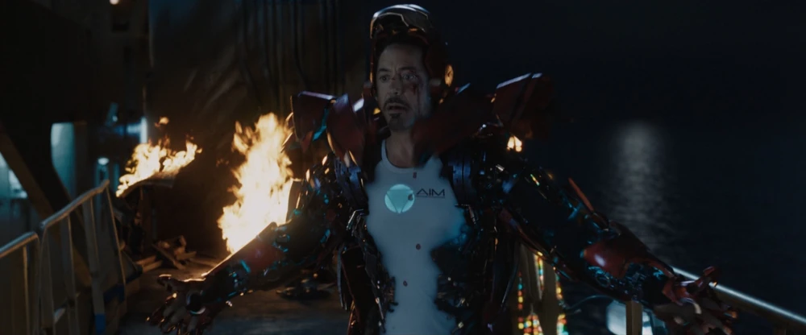
Silver Centurion Suit-Up
Tony Stark activates the House Party Protocol, calling his remaining armors to the docks, and suits up in the silver-and-red Mark XXXIII.
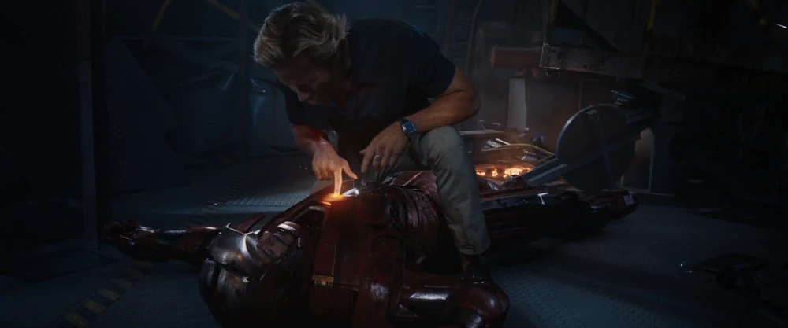
Silver Centurion in Combat
Tony Stark uses the Silver Centurion's thermal blade to fight Killian, slicing through Extremis soldiers before the suit is heavily damaged.
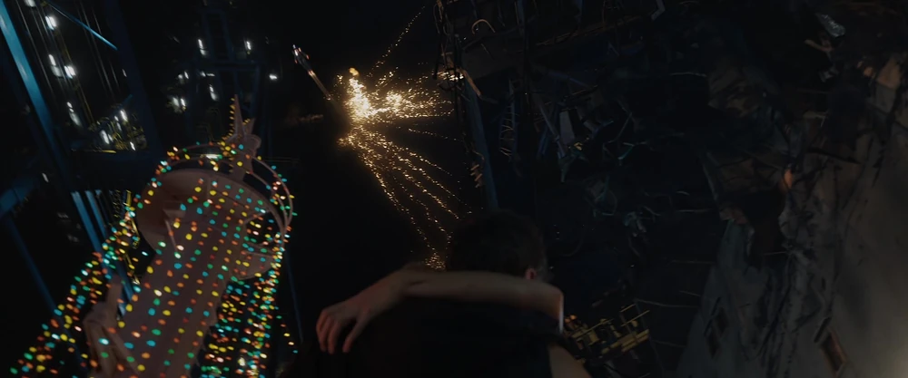
Clean Slate Protocol
After defeating Killian, Tony Stark orders J.A.R.V.I.S. to detonate all remaining armors, creating a massive fireworks display over the harbor.
Reuniting at Christmas
Tony and Pepper celebrate Christmas. Tony undergoes surgery to safely remove the shrapnel and Arc Reactor, starting a new chapter of trust.
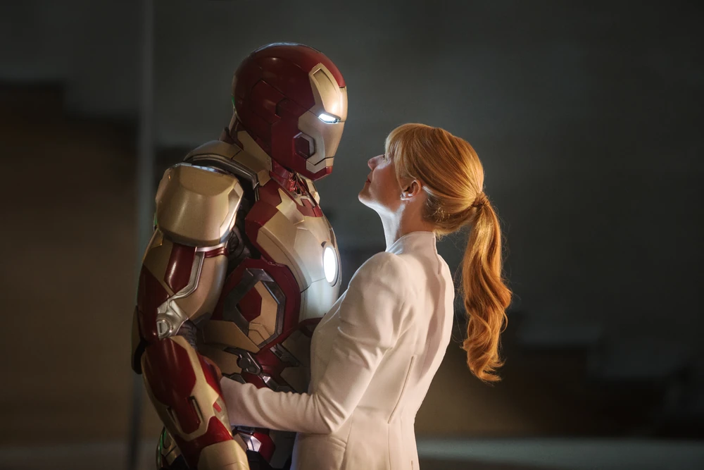
Tossing the Arc Reactor
Tony returns to the ruins of his Malibu mansion, throwing his retired chest Arc Reactor into the sea. "My armor was never a hobby... it was a cocoon. I am Iron Man."